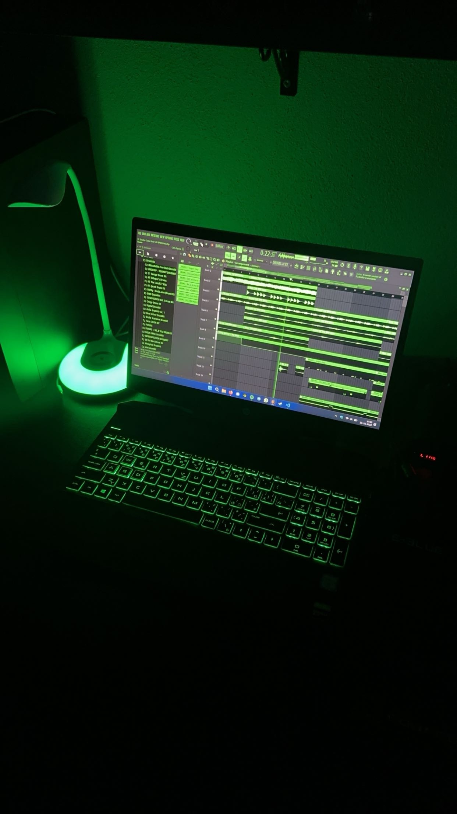
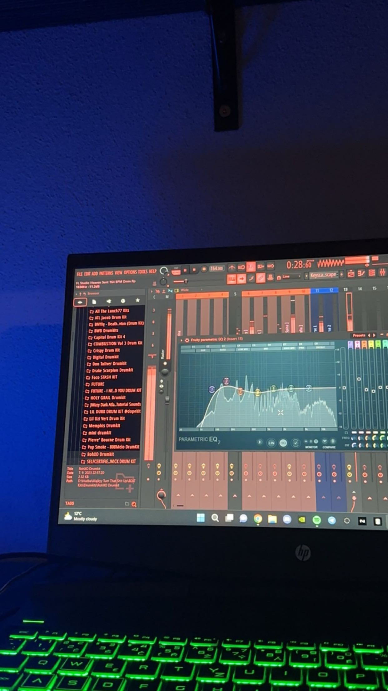
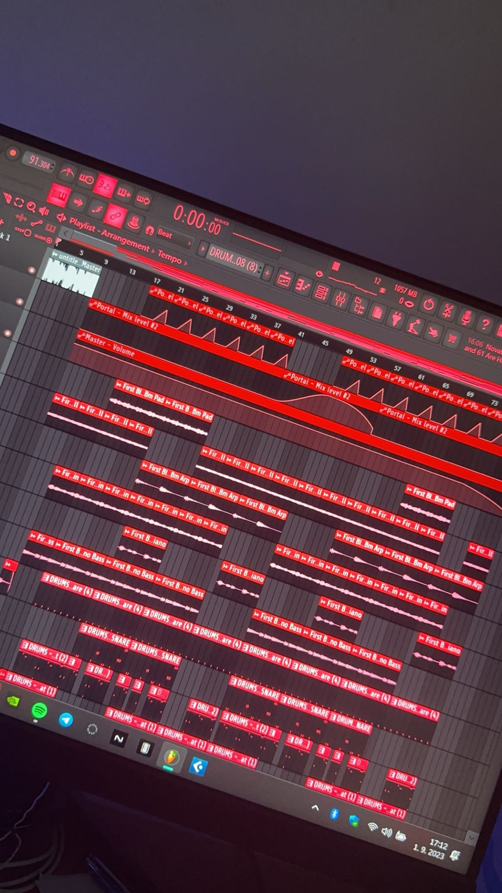

Home
Programs
CZ/SK Rap
Store
Contact
Home
Programs
CZ/SK Rap
Store
Contact
Music is the best way how to express feelings or moods, it could be through writing lyrics, making or producing beats and know how to make it

MUSIC
Programs, rappers, producers, genres
Music
Music
Personally for me it is an irreplaceable part of every day, I listen to music whenever I can. Music has always been an activity for me when I can relax, chill out. I've been listening to music since I was a kid and of course that taste in music has evolved over time. In the beginning it was mostly radio tracks and later when I was older it was rap/hip-hop tracks that weren't played on the radio because of the vulgarisms in the tracks.
Making Beats
fuh, to be honest making beats, it's not as easy as one would think because first you have to have a program where you make the beat. I don't mean making music where there's a vocal plus an overall beat. When you have plugins from which you make the melody. A plugin is software that is compatible with music programs such as FL Studio, Cubase, Logic Pro or Ableton. Some are very expensive like Omnisphere, which costs 800€. But there are very good and high quality sounds in it. And then once you have the plugins of your choice then you make the melody. After you have the melody, then you have to put it in the "master" in that program and tune the sounds that make up the whole melody so that it's balanced.
My experience with music
My first experience with making music was about a year and a half ago. It's quite an interesting story because one day I was out with my friend and we were having a normal conversation like we always do and he was telling me that he's been writing lyrics for quite a long time and he wanted to start making music somehow, but he doesn't have or know anyone who makes beats.
So I told him that I could try it, because I've always been interested in how it can be done. How those producers know how to make it a hit. I've been watching different videos since 2020. For example, Aiden Kenway is an American producer who remakes famous tracks and tracks out the whole process of how he did it. I saw a video where he called the producer of AXL Beats on discord, who told him what presets and plugins he used when making the beat. Aiden then just made the beat and it was done. But I've watched other producers from other countries or Slovakia as well. So I decided to give it a go myself. So I wrote to my friend Adam and asked him if he knew of a program that you can make beats in and he told me that LMMS is one that you can learn how to make beats in.

Making Beats
So I started to learn how to make beats in LMMS and at first it was very hard but over time I made some beats in that program as well. But there was one major problem and that was that it was possible to make music in that program, but it was pretty bad to do the master and the overall arrangement. That's why I changed LMMS for FL Studio, which is used by the most famous producers and it's a really brilliant program in which you can do amazing things. Of course my other friend Slava helped me a lot because he has been making beats for quite a long time and he helped me a lot how to start and everything. We even have some beats together and we did a beat for the rapper RuckFiso and it was great, I did the melody and he did the drums.

Gallery of my beats


